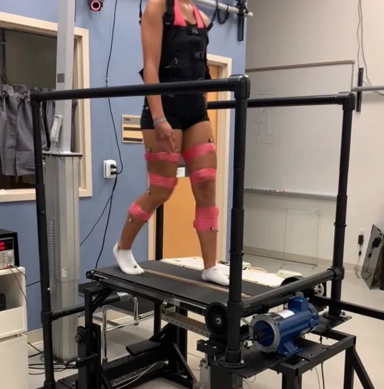
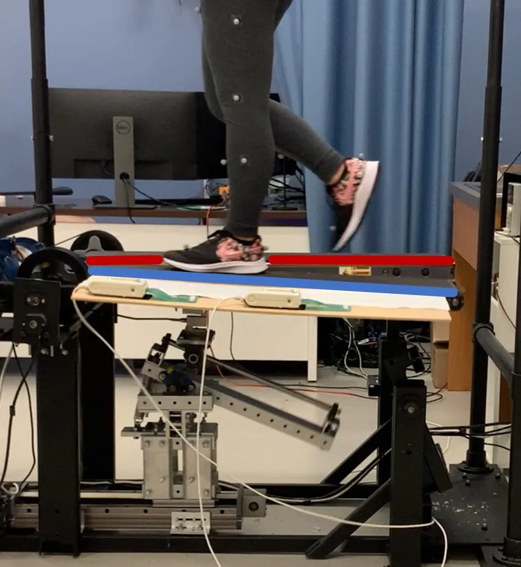
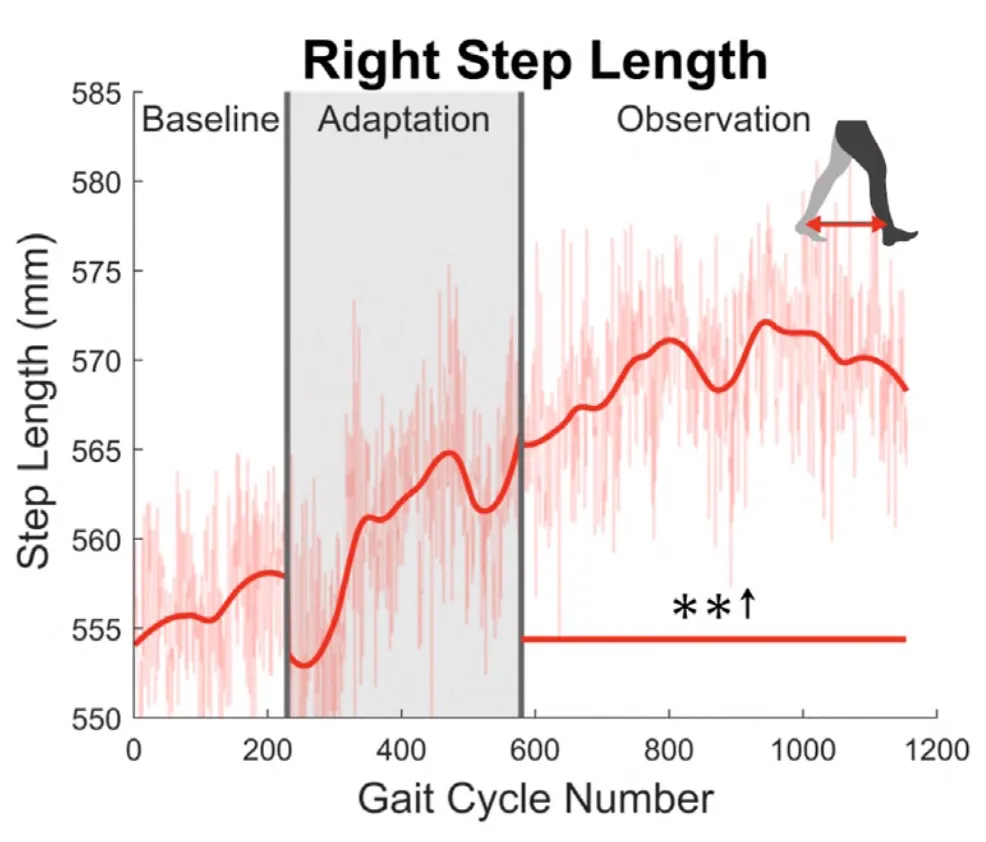
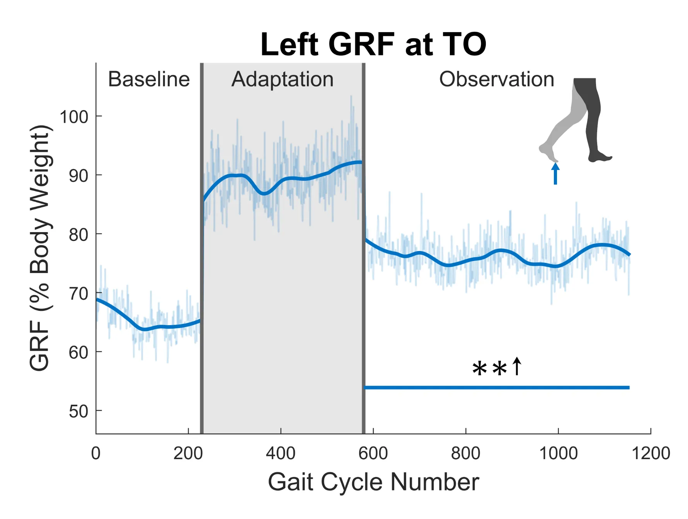

Variable Stiffness Treadmill


The main experiment layout I have used has three phases: baseline (250 gait cycles), adaptation (400 gait cycles), and observation (600 gait cycles). During both the baseline and observation phases, both sides of the treadmill are set to rigid. The treadmill is functioning like a normal treadmill for these portions of the experiment. During the adaptation phase, the left side of the treadmill is reduced from rigid to 45 kN/m, which is comparable to a soft yoga mat. This creates a few cm of deflection during the left stance phase for most adults. While the subjects are being perturbed during the adaptation section of the experiment, this is not my main focus. Instead, I am interested in how the observation phase differs from the baseline phase. In other words, how are the subjects walking differently after the adaptation phase compared to before?


I have completed about 30 experiments with healthy adults using this layout, most of which show similar results. The graphs seen above are averages from a set of 12 subjects from one of my journal publications [Link]. It can be seen that reducing surface stiffness for the left leg results in an increase in right step length. This is quite interesting as we are not perturbing the right side, but the right side is reacting and adapting through a mechanism called interleg coordination. Another main takeaway from this study was the increase in left ground reaction force (GRF), or push-off force. Significant increases can be seen for both parameters for the entire 600 gait cycle observation phase, where the treadmill is set back to rigid on both sides.
Because of the nature of these results, among others, we believe that the unilaterally soft environment created by the VST could be a valuable stroke rehabilitation tool. Common post-stroke gait dysfunction symptoms consist of unilaterally shortened step length and reduced push-off force. The next stage of my research will consist of running the same experiments with stroke patients. I have already started the preliminary testing with two pilot subjects, and the data seems to be quite promising.